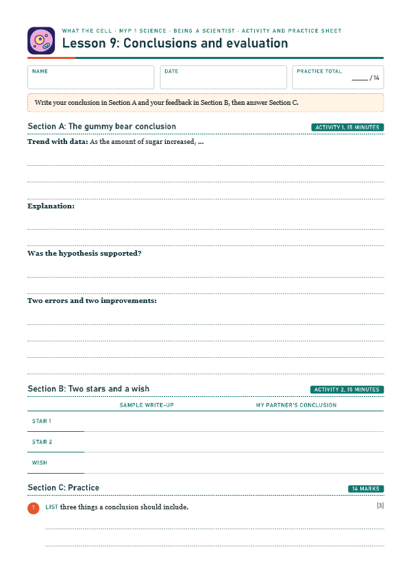

By the end of the lesson you can
- Describe the pattern in results using data
- Explain the pattern with scientific ideas
- Compare the results with the hypothesis
- Evaluate an investigation and suggest improvements
Keys: arrows or a presentation clicker move the slides, F for full screen. Slides with a red dot have a video or simulation.
Videos (all 5 minutes or less)
- 2:19
Working Scientifically, Conclusions
SciencePalmer. While you watch: What should the first sentence of a conclusion describe? Slide 10.
Simulations
- Lab
Print and practise

Activity and practice sheet
Used in the lesson’s activities, with practice questions. Your teacher has the answers.
Download (PDF)Lesson 9 slides
All 16 slides in one file, to read again or print. The video buttons on the slides open YouTube.
Download the slides (PDF)Revising? The Revision tab on the unit page has the unit notes and review.
Class activity pack
Everything to print for the lesson’s activities: picture cards, sorting mats, station cards with their kit lists, and the teacher’s set-up notes. Print it before class.
Download the activity pack (PDF)Notes: Conclusions and evaluation
conclusion
What the results show, using data, compared with the hypothesis. For example: more sugar gave less growth.
trend
The general direction of the results. For example: down as sugar goes up.
error
Something that makes a measurement less exact. For example: soft bears were hard to measure.
valid
A fair test that really tested the question. For example: only sugar was changed.
improvement
A change to the method that would give better results. For example: measure mass instead of length.
feedback
Comments that help someone improve. For example: two stars and a wish.
Key words
| conclusion | what results show, with data |
|---|---|
| trend | the general direction of the results |
| error | what makes a measurement less exact |
| valid | a fair test of the question |
| reliable | gives the same results when repeated |